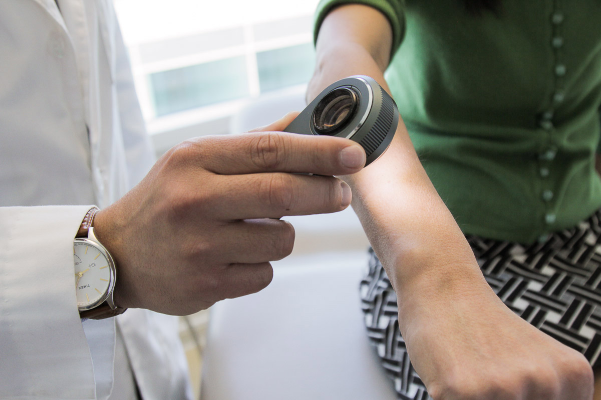

It is quickly becoming clear that AI can outperform humans at simple, repetitive tasks. Physicians don’t enjoy repetitive tasks -- they enjoy applying reason and judgment to solve complex problems that will help patients. Rather than AI taking over the healthcare industry, AI will assist humans in the more unpleasant facets of healthcare, allowing physicians to focus more on working with their human patients. With the development of AI applications in the healthcare industry, physicians will be able to better understand patient circumstances, develop bonds, and serve as trusted advisors to their patients.
Some of the various uses of artificial intelligence in healthcare...
Computer Vision
Below is a video about how machine learning, a subset of AI, has transformed image analysis for doctors
There have been many breakthroughs in computer vision because of AI, spurred by Microsoft’s InnerEye initiative in 2010. Microsoft’s InnerEye project develops machine learning techniques to precisely display tumors and healthy tissue inside the human body. According to Daniel Faggella, CEO and founder of TechEmergence, this project will lead to faster radiotherapy planning and precise navigation during surgery.
Suggestions for Treatment
By serving as an extension of scientific knowledge, machines have begun to aid doctors in making the right decisions about diagnosis and treatment. A team of physicians and analysts at Sloan Kettering have been training IBM Watson to choose the best treatment plans for individual patients using AI. In essence, Watson suggests treatment plans based on what has worked best in the past, giving doctors information about unique future cancer cases.
Wearable Computing
Artificial intelligence has begun to be integrated with wearable computing. According to Paul Lukowicz, Professor of Computer Science at the University of Kaiserslautern, wearable computing can benefit the healthcare industry in three specific ways.

First, unobtrusive wearable sensors can allow for the monitoring of physiological parameters to be conducted over long term in patient’s natural environment. Such long term, real life data can lead to diagnostic and therapeutic opportunities far better than what is possible on the basis of individual patient measurements.
Secondly, wearable context monitoring allows long-term recording of patient activity. Such information can be used to annotate physiological data, allowing physicians to better judge its significance.
Finally, wearable systems allow users to take an active role in health management and disease prevention. Wearable computing systems can potentially give users feedback about the relationship between their health and activities, allowing users to adjust their lifestyles to the requirements of their health.
Skin Cancer Screening
Skin cancer is the most common type of cancer, with 5.4 million new cases and more than 10,000 deaths every year in the United States. As visual malignancies, early detection is critical so patients can get treatment as fast as possible. In 2017, Andre Esteva, a Stanford PhD computer science student, along with his colleagues, created a deep neural network that was able to differentiate between images of malignant and benign skin lesions. The network performed remarkably well, with results comparable to a panel of board-certified US dermatologists (Esteva, A). After training the network, the computer was tested against 21 certified dermatologists on images of skin lesions, and the computer significantly outperformed the humans in correctly identifying if the lesions were benign or malignant.
While this technique certainly needs to be refined and tested by clinical experts, the power of AI to perform skin cancer screenings could significantly reduce the number of deaths suffered every year. Performing a skin exam is a difficult and time-consuming task, and the use of this technology could help patients save not only time, but their lives. By reducing the time to perform a clinical visit, future applications of this technology could help dermatologists spend more time with patients to develop human bonds of trust and create prevention plans that match patient goals.
